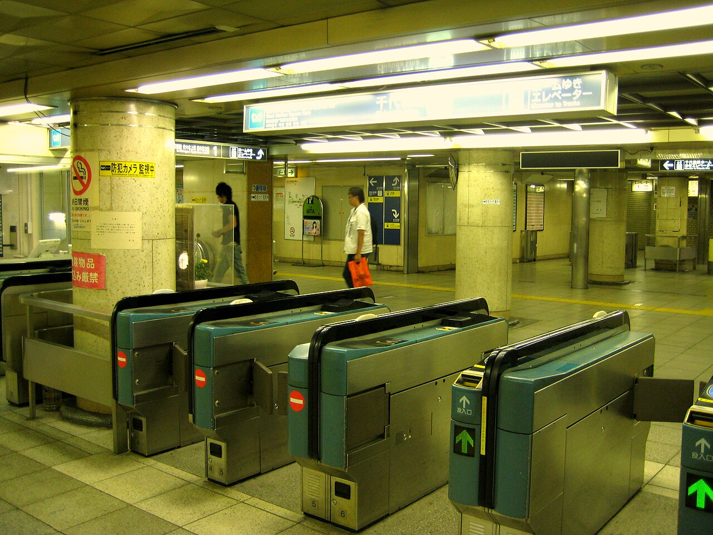
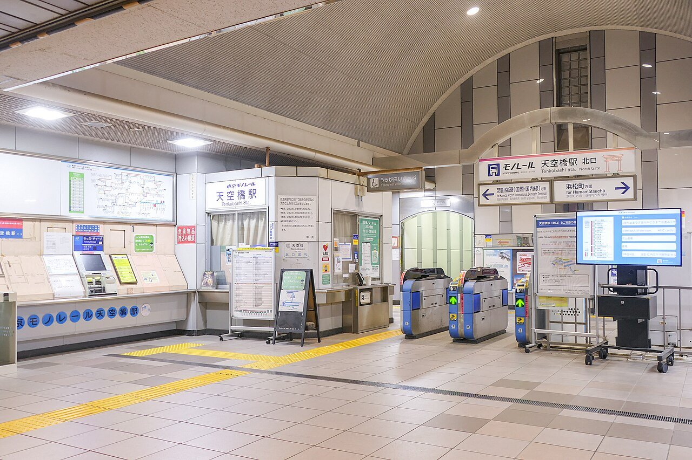

How to Get and Use an IC Card

ICカードの買い方と使い方
← All articles / 記事一覧へAn IC card is a prepaid card: add yen, then tap to ride or shop wherever your card is accepted. You can take local trains in Tokyo and later use the same card in Osaka. That does not mean you can tap in at Tokyo and tap out at Osaka on one continuous journey.
交通系ICカードは、先にお金を入れて、対応する電車・バスや店でタッチして使うカードです。東京で使ったカードは大阪の対応路線でも使えます。ただし、東京で入場し、大阪までエリアをまたいでそのまま出場することはできません。

1. Choose your card カードを選ぶ
For a short visit, Welcome Suica and TOURIST PASMO have no deposit. For repeat visits, consider a regular card such as PASMO. Its ¥500 deposit is separate from the money you can spend. To get the deposit back, return the card at a participating PASMO counter; a refund fee may be deducted from the remaining balance.
短期旅行なら、Welcome SuicaとTOURIST PASMOは保証金（デポジット）が不要です。再訪するなら通常のPASMOなども選べます。通常のPASMOの保証金500円は運賃に使える残高とは別です。払い戻し対応のPASMO窓口にカードを返すと保証金が戻ります。残高からは手数料が引かれる場合があります。
2. Where to buy it どこで買うか
Narita or Haneda: TOURIST PASMO / 成田・羽田で買う
At Narita, look for the SKYLINER & KEISEI INFORMATION CENTER at Terminal 1 or Terminal 2 station (¥2,000). At Haneda, use a Keikyu ticket machine for travelers at the Terminal 1 or 2 gate, or beside the Keikyu Tourist Information Center in the Terminal 3 arrivals lobby (2F). These machines accept credit cards and offer amounts from ¥1,000 to ¥10,000.
成田では第1・第2ターミナルの駅にある「SKYLINER & KEISEI INFORMATION CENTER」で2,000円のカードを買えます。羽田では第1・第2ターミナルの各改札、または第3ターミナル2階到着ロビーの京急案内所横に旅行者向け券売機があります。発売額は1,000～10,000円で、クレジットカードも使えます。
Kansai Airport or a PASMO station / 関西空港・PASMO取扱駅
At Kansai-airport Station, ask for ICOCA at the JR ticket office. The visitor-design card costs ¥2,000 (¥1,500 to spend and a ¥500 deposit); bring your foreign passport showing Temporary Visitor status. For a regular PASMO, bring cash to a participating station machine and choose “PASMO” → “Purchase new PASMO.”
関西空港駅ではJRのみどりの窓口でICOCAを購入できます。訪日客向けデザインは2,000円（利用可能額1,500円＋保証金500円）です。「短期滞在」の外国旅券を持参してください。通常のPASMOなら、取扱駅の券売機で「PASMO」→「新規購入」を選び、現金で支払います。
On your phone / スマートフォンで使う
On a compatible iPhone, open Wallet → “+” → “Transit Card,” choose Suica, PASMO or ICOCA, then select an amount. You need an eligible payment card in Wallet. For an Apple Watch, start in the iPhone’s Watch app under “Wallet & Apple Pay.” If setup fails, use a physical card.
対応するiPhoneでは、ウォレットの「＋」→「交通系ICカード」でSuica・PASMO・ICOCAなどを選び、入金額を指定します。ウォレットに対応する決済カードが必要です。Apple Watchの場合はiPhoneのWatchアプリの「ウォレットとApple Pay」から始めます。設定できなければカードを購入してください。
3. How to use it 使い方
- Train: Tap at the IC gate on entry and exit with the same card or device. The fare is deducted at the exit. If the gate stays shut, ask station staff. 電車では入場時と出場時に同じカードか端末をタッチします。出場時に運賃が引かれます。改札が開かないときは駅員に声をかけてください。
- Bus: Follow the signs: on a pay-on-entry bus, tap when boarding. On a distance-based pay-on-exit bus, tap when boarding to record your stop, then tap again when leaving to pay. The payment tap deducts the fare; do not pay again in cash. バスでは車内表示を確認してください。前払いなら乗車時にタッチ。距離制の後払いなら乗車時にタッチして乗車地点を記録し、降車時にもう一度タッチして支払います。別に現金を払う必要はありません。
- Shop: At a participating till, say “IC kādo de onegaishimasu” and tap the reader. 対応店では「ICカードでお願いします」と伝え、読み取り部にタッチします。
- Top up: At a station machine, choose “Charge,” select an amount and insert yen cash. Check the new balance. For PASMO and ICOCA the maximum stored balance is ¥20,000. 駅の対応券売機で「チャージ」と金額を選び、現金を入れて残高を確認します。PASMO・ICOCAの残高上限は2万円です。
4. Watch out for 注意点
- TOURIST PASMO: Carry the reference paper with the card. It shows the expiry date: 28 days counting the purchase day. Unused credit is not refunded, so top up a little at a time. 購入日を含めて28日間有効です。期限が載った控えをカードと一緒に携帯してください。残高は払い戻せないので、少しずつチャージしましょう。
- Long-distance trains: Before boarding a Shinkansen or limited express, check which ticket or reservation you need. Do not assume that tapping your card covers the trip. 新幹線や特急では、タッチだけで乗れるとは限りません。乗車前に必要なきっぷ・予約を確認してください。
- Lost PASMO: A lost TOURIST PASMO or blank PASMO cannot be replaced. A personalized PASMO can be reissued for a fee. TOURIST PASMOと無記名PASMOは紛失時に再発行できません。記名PASMOは有料で再発行できます。
Quick checklist 確認リスト
- Before boarding: check the IC mark and your balance. / 乗る前にICマークと残高を確認。
- At the exit: use the card or device you entered with. / 改札を出るときは入場時と同じカード・端末で。
- Before leaving Japan: check your card’s expiry and refund rules. / 帰国前にカードの期限と払い戻し条件を確認。
 Your Guide Buddy / 旅の案内役
Your Guide Buddy / 旅の案内役